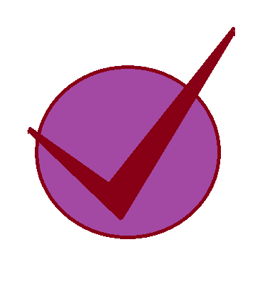

Routine Inflencer home page

ROUTINE INFLUENCER
About this:
This Routine influencer application is a simple and user-friendly webpage designed to help users organize their daily tasks efficiently. It allows users to add, view, and manage their tasks in an easy way, making daily planning more effective
This project is my first HTML project and my first webpage, created to understand the basics of web development. Through this project, I learned how to structure a webpage using HTML ,CSS and gained hands-on experience in building a real, working page from scratch.
Developing this Routine Influencer app helped me improve my confidence and interest in front-end development. It marks the beginning of my journey in web development and motivates me to learn more advanced technologies in the future.
Let's start with healthy routine
Healthy Routine:
HEALTH IS WEALTH!!!!
click here to be healthy!
Work Schedule:
Feeling so stressed? try these!
click here to reduce your work load!
Med Time:
Schedule your med time and it will alarm you on time.
click here to return back to your healthy life.